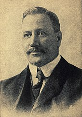

จุดเริ่มต้นของวอลเลย์บอล
กีฬาวอลเลย์บอลถือกำเนิดขึ้นในปี ค.ศ. 1895 โดยนายวิลเลียม จี. มอร์แกน ผู้อำนวยการฝ่ายพลศึกษาของสมาคม วายเอ็มซีเอ เมืองฮอลโยค รัฐแมสซาชูเซตส์ ประเทศอเมริกา ซึ่งได้เกิดขึ้นเพียง 1 ปี ก่อนการแข่งขันกีฬาโอลิมปิกสมัยใหม่ ครั้งที่ 1
เขาได้เกิดแนวความคิดที่จะนำลักษณะและวิธีการ เล่นของกีฬาเทนนิสมาดัดแปลงใช้เล่น จึงใช้ตาข่ายเทนนิสซึ่งระหว่างเสาโรงยิมเนเซียม สูงจากพื้นประมาณ 6 ฟุต 6 นิ้ว และใช้ยางในของลูกบาสเกตบอลสูบลมให้แน่น แล้วใช้มือและแขนตีโต้ข้ามตาข่ายกันไปมา แต่เนื่องจากยางในของลูกบาสเกตบอลเบาเกินไป ทำให้ลูกบอลเคลื่อนที่ช้าและทิศทางที่เคลื่อนไปไม่แน่นอน จึงเปลี่ยนมาใช้ลูกบาสเกตบอล แต่ลูกบาสเกตบอลก็ใหญ่ หนักและแข็งเกินไป ทำให้มือของผู้เล่นได้รับบาดเจ็บ
ค.ศ.1896 ได้มีการประชุมสัมมนาผู้นำทางพลศึกษาที่วิทยาลัยสปริงฟีลด์ (Spring-field College) นายวิลเลียม จี มอร์แกน ได้สาธิตวิธีการเล่นต่อหน้าที่ประชุมหลังจากที่ประชุมได้ชมการสาธิต ศาสตราจารย์ อัลเฟรด ที เฮลสเตด (Alfred T. Helstead) ได้เสนอแนะให้มอร์แกนเปลี่ยนจากมินโทเนตต์ (Mintonette) เป็น "วอลเลย์บอล" (Volleyball) โดยให้ความเห็นว่าเป็นวิธีการเล่นโต้ลูกบอลให้ลอยข้ามตาข่ายไปมาในอากาศ โดยผู้เล่นพยายามไม่ให้ลูกบอลตกพื้น
ค.ศ. 1928 ดร.จอร์จ เจ ฟิเชอร์ (Dr. George J. Fisher) ได้ปรับปรุงและเปลี่ยนแปลงกติกาการเล่นวอลเลย์บอล เพื่อใช้ในการแข่งขันกีฬาวอลเลย์บอลในระดับชาติ และได้เผยแพร่กีฬาวอลเลย์บอลจนได้รับสมญานามว่า บิดาแห่งกีฬาวอลเลย์บอล
